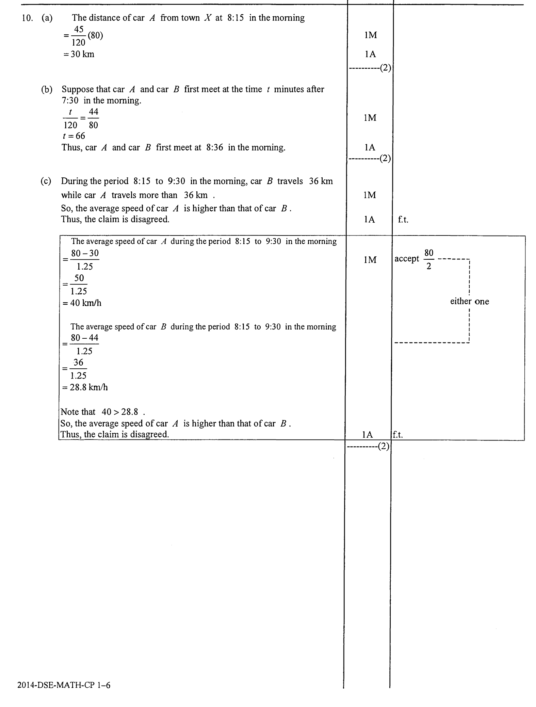

2014 DSE 數學 P1 Q10 答案＋詳解
題目（中文卷）
$X$ 城與 $Y$ 城相距 $80 \text{ km}$。圖 2 顯示在某上午 7:30 至 9:30 期間，在 $X$ 城與 $Y$ 城之間的同一直路上汽車 $A$ 及汽車 $B$ 行駛的圖像。汽車 $A$ 在該期間以恆速率行駛。汽車 $B$ 於該上午 8:15 停下。

(a) 求於該上午 8:15 汽車 $A$ 與 $X$ 城間之距離。 (2 分)
(b) 在該上午 7:30 之後，汽車 $A$ 與汽車 $B$ 於甚麼時間首次相遇？ (2 分)
(c) 汽車 $B$ 的司機宣稱在該上午 8:15 至 9:30 期間，汽車 $B$ 的平均速率較汽車 $A$ 高。你是否同意？試解釋你的答案。 (2 分)
English version（英文卷題目）
Town ( X ) and town ( Y ) are 80 km apart. Figure 2 shows the graphs for car ( A ) and car ( B ) travelling on the same straight road between town ( X ) and town ( Y ) during the period 7:30 to 9:30 in a morning. Car ( A ) travels at a constant speed during the period. Car ( B ) comes to rest at 8:15 in the morning.

(a) Find the distance of car ( A ) from town ( X ) at 8:15 in the morning. (2 marks)
(b) At what time after 7:30 in the morning do car ( A ) and car ( B ) first meet? (2 marks)
(c) The driver of car ( B ) claims that the average speed of car ( B ) is higher than that of car ( A ) during the period 8:15 to 9:30 in the morning. Do you agree? Explain your answer. (2 marks)
官方評卷參考（Marking Scheme）

考評報告
（a）甚佳。大部分考生能得出於該上午8:15汽車A與X城間之距離,而少數考生混淆了X城與Y城,因而誤以50km作為答案。 （b）良好。部分考生雖然能得出汽車A與汽車B於該上午7:30之後66分鐘首次相遇,但未能給出正確答案。 （c）良好。很多考生能得出汽車A及汽車B的平均速率,並得出正確的結論,而部分考生誤以為在該上午8:15至9:30期間,汽車A與汽車B的平均速率相同。
相關課題
技能分析（呢題考咩、陷阱喺邊）
- 主課題
- 三角學與解三角形